hybrid_cv01 crane controller — seed sensitivity and action space comparison¶
Scope: seeds 5775 and 42 · 3 000 000 training steps each · PPO (Stable-Baselines3) · continuous and discrete action spaces
The hybrid_cv01 reward was trained on the anti-pendulum crane environment with identical
PPO hyperparameters across two seeds (5775 and 42) and two action spaces (continuous and
discrete). This document covers training dynamics, seed sensitivity, and the effect of
discretising the action space on final position precision.
1 Reward design¶
The agent receives a dense signal at every step composed of several explicit penalty terms: position offset from centre, crane velocity, crane acceleration, and total mechanical energy. Each term has a hand-tuned weight. The agent is told what to achieve (stop here, stop gently, use little energy) directly.
The pendulum energy term is the negative total mechanical energy of the load: most positive (least negative) when the pendulum hangs stationary, decreasing as it swings. The \(-|x|\) and \(-\dot{x}^2\) terms penalise crane offset and crane speed directly. The \(-5\) terminal penalty fires once on rail collision.
Notation: \(x\) = crane position (m), \(\dot{x}\) = crane velocity (m/s), \(z_\mathrm{load}\) = vertical coordinate of the pendulum bob with \(g = 9.81\) m/s², \(v_\mathrm{load}\) = load speed (m/s).
2 Simulation environment¶
2.1 Physical parameters¶
Parameter |
Symbol |
Value |
|---|---|---|
Timestep |
dt |
1.0 s / step |
Max crane acceleration |
\(a_\text{max}\) |
0.1 m/s² |
Rail limit |
\(x_\text{limit}\) |
±2.0 m |
dt = 1.0 s/step means one simulated second per control step. Settle step and simulated seconds are numerically equal.
2.2 Episode and training parameters¶
Parameter |
Value |
|---|---|
max_episode_steps |
1 000 |
Total training steps |
3 000 000 |
randomize_start |
True (training) / False (evaluation) |
Seeds |
5775 and 42 |
2.3 PPO hyperparameters (Stable-Baselines3)¶
Parameter |
Value |
|---|---|
gamma |
0.99 |
learning_rate |
3 × 10⁻⁴ |
n_steps |
4 096 |
n_envs |
32 |
clip_range |
0.2 |
ent_coef |
0.0 |
For the continuous action space, the Gaussian policy’s initial standard deviation
(log_std_init) is auto-derived from \(a_\text{max}\) rather than left at Stable-Baselines3’s
default — see §3.1’s entropy_loss note and the project’s ppo_agent.py docstring for why
this matters for continuous control at this action scale.
3 Metric glossary¶
3.1 PPO algorithm metrics¶
These quantities are produced by the PPO optimiser at each update step. They describe how the learning process itself is behaving, not the crane directly.
explained_variance
: The value function (critic network) continuously predicts the total future reward from the
current state. Explained variance measures how accurate those predictions are.
Think of it like the innovation in a Kalman filter: a value of 1.0 means perfect
predictions; 0.0 means the critic is no better than always guessing the average;
negative means the critic is actively worse than guessing — it is confident but wrong.
Healthy range once the agent is past the crash-avoidance phase: 0.5 – 0.9.
value_loss
: The mean-squared error between the critic’s predictions and the actual observed returns.
Lower is better. Healthy behaviour: starts high, falls monotonically, converges near zero.
Trap: a very low value_loss coexisting with negative explained_variance signals that
the critic has collapsed to predicting a near-constant for all states (zero variance in
predictions → low MSE, but zero predictive power).
approx_kl
: KL divergence between the old policy and the updated policy after one optimisation step.
Measures how much the agent’s decision-making changed this update. Healthy: small and
stable (0.01 – 0.05). Large values indicate an aggressive or destabilising update.
clip_fraction
: PPO limits how large each policy update can be via a clipping ratio. This metric is the
fraction of training samples that hit that limiter — analogous to a saturation nonlinearity
in a controller. Healthy: 0.10 – 0.25. Consistently above 0.35 suggests the optimiser
is fighting against the clip and update quality may degrade.
entropy_loss
: Stable-Baselines3 logs \(-\text{entropy}\) of the policy distribution. More negative =
more random / exploratory. With ent_coef = 0 (as in both configs here), there is no
explicit entropy bonus, so nothing in the loss opposes entropy drifting up over training —
a rising entropy_loss here does not by itself indicate a problem; what matters is
whether the resulting action distribution stays well inside the action box (see §3.3).
policy_gradient_loss
: The PPO surrogate objective value. Negative means the gradient is pointing in a
direction that increases expected reward. Should remain stable and negative.
3.2 Training performance metrics¶
ep_len_mean
: Average episode length (simulation steps). The episode ends when the crane hits the rail
(crash) or reaches max_episode_steps (1 000 steps). Healthy: grows from ~20 (constant
crashing) to 1 000.
rew_per_step
: Total episode reward divided by episode length — a normalised reward signal that removes
the confounding effect of episode length changing over training. Healthy: increases
(becomes less negative) over time.
rail_hit_pct
: Percentage of episodes that ended by the crane hitting the rail. Healthy: starts at 100%
(random policy crashes immediately), falls to 0% and stays there.
3.3 Physical crane metrics¶
These appear in the log only once some episodes survive without crashing. They measure what the crane actually does at episode end, independent of the reward formulation.
mean_x_pos_abs
: Mean absolute crane position from centre (metres). Falls toward 0 as training progresses.
mean_x_vel_abs
: Mean absolute crane velocity (m/s). Falls toward 0 as the crane learns to stop cleanly.
mean_energy
: Residual mechanical energy in the crane–pendulum system at episode end. Falls toward 0
as motion ceases.
mean_theta_dot_abs
: Mean absolute pendulum angular velocity (rad/s). Falls toward 0 as the pendulum damps
out.
mean_theta_dev
: Mean angular deviation of the pendulum from the upright position. Falls toward 0 as the
pendulum stays balanced.
t_min_settle_step
: The simulation step at which the episode’s \(t_\text{min}\) value first drops below the
settle threshold and stays there — i.e. the moment the crane is judged to be
effectively at rest. The simulation timestep is dt = 1.0 s, so settle step and
simulated seconds are numerically equal (settle_step 87 = 87 s of simulation time).
Lower is faster convergence.
4 Training dynamics — seed 5775¶
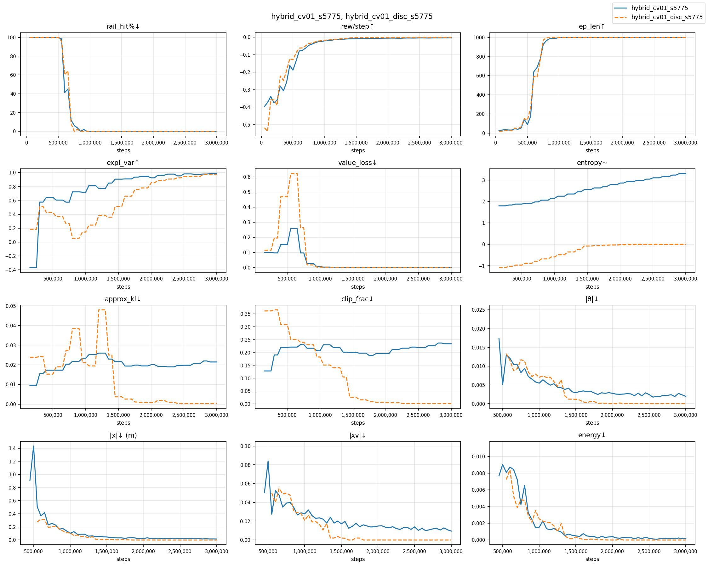
Figure 1. Twelve training metrics over 3 M steps for seed 5775 — continuous (blue, solid) and discrete (orange, dashed). Key panels: rail_hit%↓ (top-left), expl_var↑ (row 2 col 1), value_loss↓ (row 2 col 2), |x|↓ (bottom row).
4.1 Summary¶
Metric |
cont |
disc |
|---|---|---|
rail_hit → 0% (permanent) |
950 k steps |
800 k steps |
ep_len hits maximum (1 000) |
1.0 M steps |
900 k steps |
Value instabilities |
none |
none |
Explained variance at 3 M |
0.986 |
0.971 |
Mean |x| at 3 M (training log) |
0.015 m |
≈ 0 m |
Both variants eliminate crashes early and permanently — discrete slightly ahead (800 k vs 950 k steps). Neither variant produces a value-function instability event. Explained variance is close between the two, with continuous now marginally ahead (0.986 vs 0.971).
4.2 Phase 1 — Survival (0 – 700 k steps)¶
The agent starts with a random policy. The crane hits the rail within roughly 20 steps every episode. Episode length grows slowly as the agent learns to delay the inevitable crash. Physical metrics are not meaningful here because all episodes end in crashes.
4.3 Phase 2 — Crash elimination¶
hybrid_cv01 eliminates crashes decisively: rail_hit_pct falls from 100% to 0% by
950 k steps (continuous) / 800 k steps (discrete) and never returns. The explicit
position-penalty terms give the agent a direct incentive to stay away from the rail at
every step.
4.4 Phase 3 — Mid-training convergence¶
Both variants continue to improve smoothly through the middle of training, with explained variance climbing and value loss falling in both cases. No instability events (sharp EV collapses or reward-distribution discontinuities) are observed in either variant for this training run.
4.5 Phase 4 — Convergence (1.5 M → 3 M)¶
Explained variance climbs monotonically in both variants. Policy becomes increasingly deterministic in the discrete case (entropy_loss → 0); the continuous policy’s entropy continues to rise slowly through 3 M steps without destabilising training. The continuous variant reaches marginally higher final EV (0.986) than discrete (0.971) — both represent a well-calibrated critic, with the continuous variant’s larger action space no longer imposing a value-estimation penalty.
Why does EV matter? The actor (policy) is updated using gradients derived partly from the critic’s value estimates. Higher EV means each policy update is based on a less biased signal, producing tighter convergence.
5 Speed sweep — seed 5775¶
hybrid_cv01_s5775 was evaluated at 100 initial crane speeds uniformly spaced from −10.0
to +10.0 m/s (step 0.2 m/s) with the pendulum initially at rest upright. No randomised
start. Each episode runs for the full 1 000-step budget.
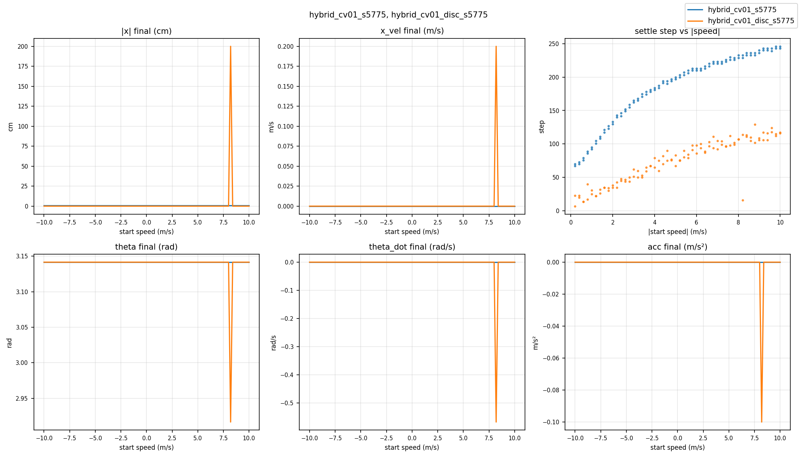
Figure 2. Speed sweep across ±10 m/s — seed 5775, continuous (blue) vs discrete (orange). Top row: final crane position (cm), final crane velocity (m/s), settle step vs |speed|. Bottom row: final pendulum angle (rad), final pendulum angular velocity (rad/s), final crane acceleration (m/s²). The single discrete spike near +8.2 m/s (visible in every panel) is the lone rail-contact episode discussed in §5.2.
5.1 Summary¶
Metric |
cont |
disc |
|---|---|---|
Crash-free episodes |
100/100 |
99/100 |
Non-converging |
0 |
0 |
Mean |x_pos| |
0.66 cm |
≈ 0 cm (machine ε, 99/100) |
Settle-step range |
67–246 steps |
7–129 steps |
Mean settle step |
184.5 |
73.7 |
5.2 Robustness across the speed range¶
The continuous variant is 100% crash-free across the full ±10 m/s range. The discrete
variant crashes once, at a single swept speed (8.2 m/s, rail contact at step 16) — the
immediately adjacent speeds (8.0 and 8.4 m/s) settle normally, so this is an isolated
single-run transient (one seed, one episode per speed), not a systematic failure. Both
variants’ broad robustness is a consequence of randomize_start = true during training:
the agent was exposed to a range of initial conditions during learning, and the learned
policy generalises far beyond that range.
Final crane position is essentially constant across nearly all 100 speed points (flat curve in Figure 2, left panel) — the agent always converges to the same physical attractor regardless of how fast the crane was initially moving. Settle step is not constant: it rises smoothly with |initial speed| (Figure 2, centre panel) — more initial momentum takes more time to brake, with no anomalous outliers in either variant.
5.3 Effect of discretisation on precision¶
With a continuous action space the agent can select any force in \([-a_\text{max},
+a_\text{max}]\), including sub-optimal intermediate values that balance the position penalty
against other terms. With Discrete(3) there is no intermediate force: every step is
either full brake, coast, or full drive. The agent must commit to a bang-bang sequence
that lands on \(x = 0\) exactly, which the dense position-penalty term directly rewards.
The result is machine-epsilon final position (1e-14 – 1e-17 m) for 99 of 100 evaluation speeds (seed 5775; the hundredth is the single rail-contact episode from §5.2) vs a constant 0.66 cm for the continuous variant. Seed 42’s discrete run is slightly less clean — see §6.2.
5.4 Settle step and speed¶
Settle step rises roughly linearly with |initial speed|: higher initial momentum requires more braking time. With dt = 1.0 s per step, the range of 67–246 steps (continuous) and 7–129 steps (discrete) corresponds to 67–246 s and 7–129 s of simulated time respectively. At speed = ±10 m/s the discrete agent settles at ~112–117 steps — close to the theoretical bang-bang minimum \(v/a = 10/0.1 = 100\) s; the continuous agent takes considerably longer (~243 s) at the same speed, reflecting its smoother, less aggressive braking profile.
5.5 Detailed sweep metrics¶
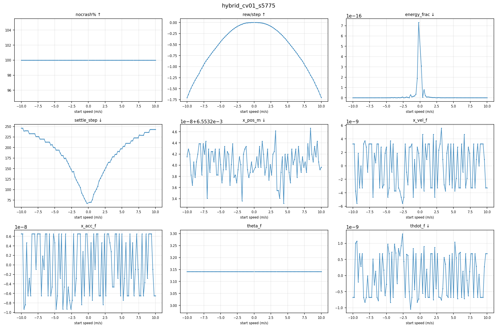
Figure 3. hybrid_cv01_s5775 continuous — nine sweep metrics across ±10 m/s.
Top row: crash rate, reward per step, energy fraction. Middle row: settle step, final
crane position, final crane velocity. Bottom row: final crane acceleration, pendulum
angle, pendulum angular velocity.
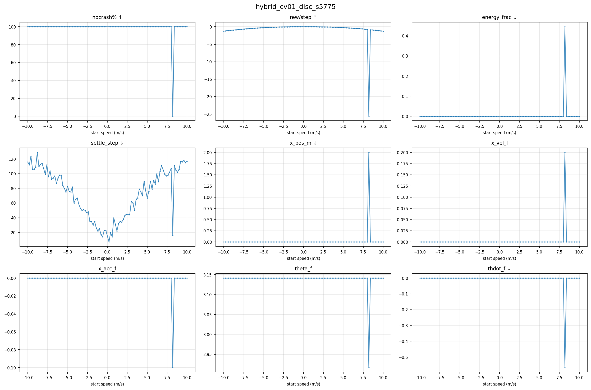
Figure 4. hybrid_cv01_disc_s5775 (discrete) — nine sweep metrics across ±10 m/s.
x_pos_m panel: machine-epsilon level (1e-14 – 1e-17 m) for 99 of 100 speeds; one
rail-contact episode at 8.2 m/s (visible as the single nocrash%↑ dip).
6 Seed 42¶
Seed 42 covers both continuous and discrete action spaces, following the same structure as §4–§5 for seed 5775. The key question: does the discrete advantage (near-machine-epsilon precision, no non-converging episodes) hold under a different random seed? It largely does, with a single-run caveat — see §6.2.
6.1 Training dynamics¶
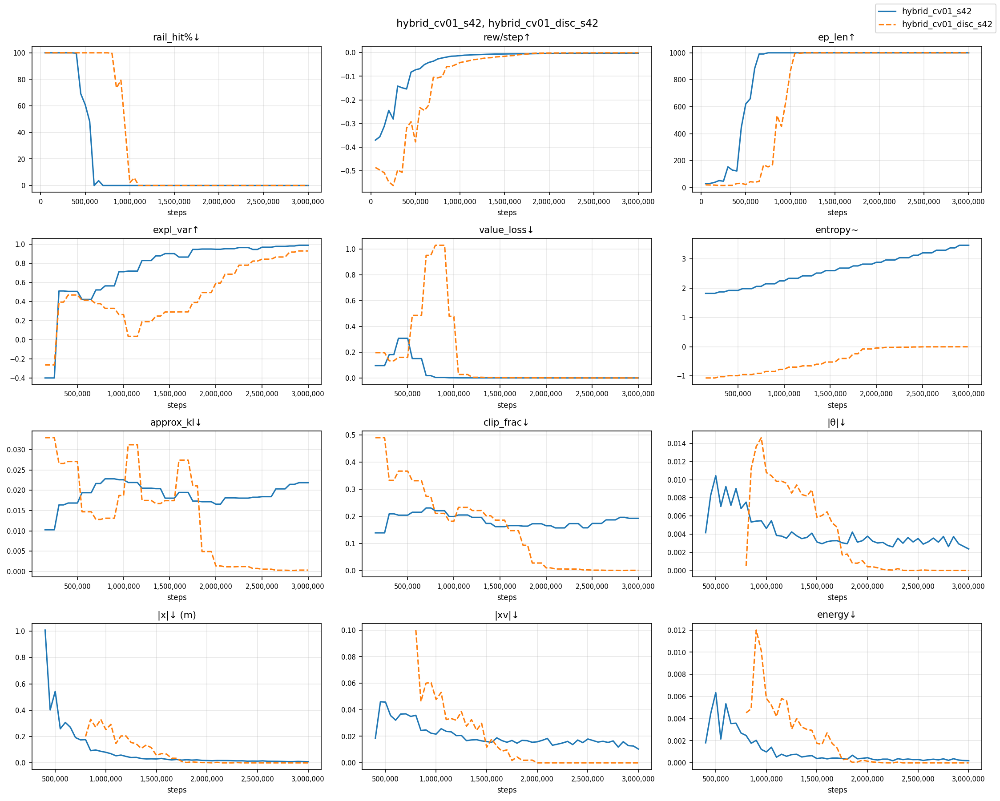
Figure 5. Twelve training metrics over 3 M steps for seed 42 — continuous (blue, solid) and discrete (orange, dashed).
Metric |
cont |
disc |
|---|---|---|
rail_hit → 0% (permanent) |
700 k steps |
1 050 k steps |
ep_len hits maximum (1 000) |
750 k steps |
1 150 k steps |
Value instabilities |
none |
none |
Explained variance at 3 M |
0.987 |
0.928 |
Mean |x| at 3 M (training log) |
0.008 m |
≈ 0 m |
For seed 42 the continuous variant eliminates crashes substantially earlier than discrete (700 k vs 1 050 k steps) and reaches a higher final EV (0.987 vs 0.928) — the same EV pattern as seed 5775: continuous now edges out discrete on critic accuracy for both seeds.
The discrete expl_var curve in Figure 5 dips sharply (to ≈ 0.04) around 800 k–1.05 M
steps before recovering to 0.93. This coincides with the discrete crash-elimination window
(rail_hit% still falling over the same interval): the policy is changing fast enough that
the critic briefly loses its fit, then re-converges once the policy stabilises. It is a
normal pre-convergence transient, not a value-function instability event — EV is monotone
non-decreasing from 1.05 M onward for both variants.
6.2 Speed sweep¶
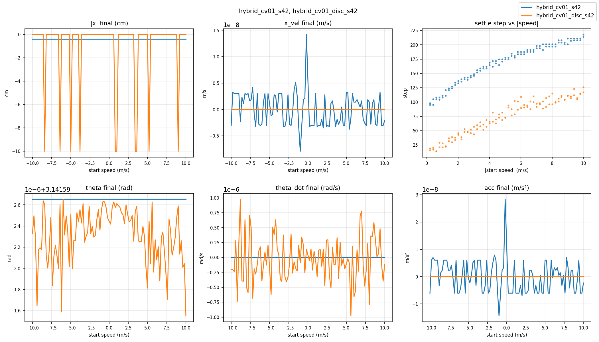
Figure 6. Speed sweep across ±10 m/s — seed 42, continuous (blue) vs discrete (orange). Top row: final crane position (cm), final crane velocity (m/s), settle step vs |speed|. Bottom row: final pendulum angle (rad), final pendulum angular velocity (rad/s), final crane acceleration (m/s²). The ten discrete downspikes to −10 cm in the |x| panel are the ±0.1 m offset attractor discussed below.
Metric |
cont |
disc |
|---|---|---|
Crash-free episodes |
100/100 |
100/100 |
Non-converging |
0 |
0 |
Mean |x_pos| |
0.39 cm |
≈ 1.0 cm (90/100 at machine ε) |
Settle-step range |
95–218 steps |
14–126 steps |
Mean settle step |
168.8 |
74.2 |
Both variants achieve zero non-converging episodes and zero crashes across the full ±10 m/s range. The discrete variant reaches machine-epsilon final position for 90 of 100 swept speeds; the other ten (−8.4, −6.4, −5.0, −3.8, +0.8, +1.0, +3.4, +3.6, +5.2, +9.0 m/s) converge instead to a ±0.1 m offset attractor — the crane parks one deadband-width off centre and toggles ±\(a_\text{max}\) across it rather than landing exactly on \(x = 0\). This lifts the discrete mean |x_pos| to ≈ 1.0 cm, still below the continuous variant’s 0.39 cm but no longer machine-epsilon everywhere. The effect is a single-run artefact: one training seed, one episode per evaluated speed, no averaging — seed 5775’s discrete run misses only once (§5), and an earlier unseeded seed-42 discrete run reached \(x = 0\) at every speed. Continuous-variant final position (0.39 cm for s42, 0.66 cm for s5775) has no anomalous outlier speeds in either seed.
6.3 Detailed sweep metrics¶
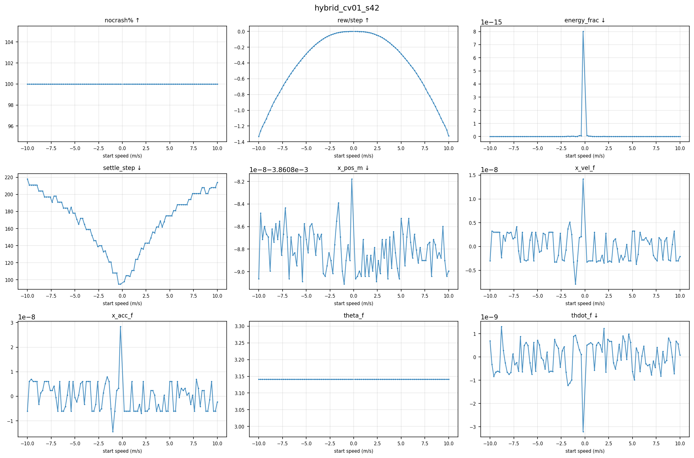
Figure 7. hybrid_cv01_s42 continuous — nine sweep metrics across ±10 m/s. Settle step
scales smoothly with |speed| with no anomalous outliers; final position is flat across the
whole range.
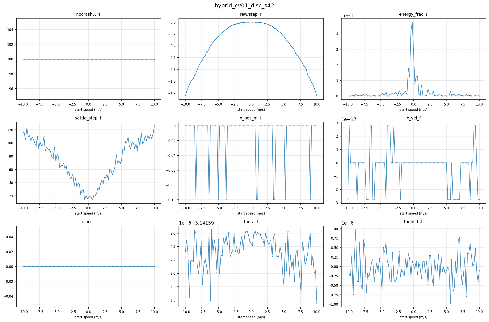
Figure 8. hybrid_cv01_disc_s42 (discrete) — nine sweep metrics across ±10 m/s.
All 100 episodes converge crash-free; x_pos at machine-epsilon level for 90 of 100 speeds,
with ten at a ±0.1 m offset attractor (see §6.2 — visible as ten downward spikes to
−0.1 m in the x_pos_m panel).
6.4 Episode trajectories¶
The plots below show time-series for individual episodes: crane position, velocity, pendulum angle, pendulum angular velocity, crane acceleration, and reward — one panel per quantity, over the full episode. They complement the sweep figures by showing how the agent moves, not just the final values.
A — Discrete, 1.2 m/s — fast bang-bang settle
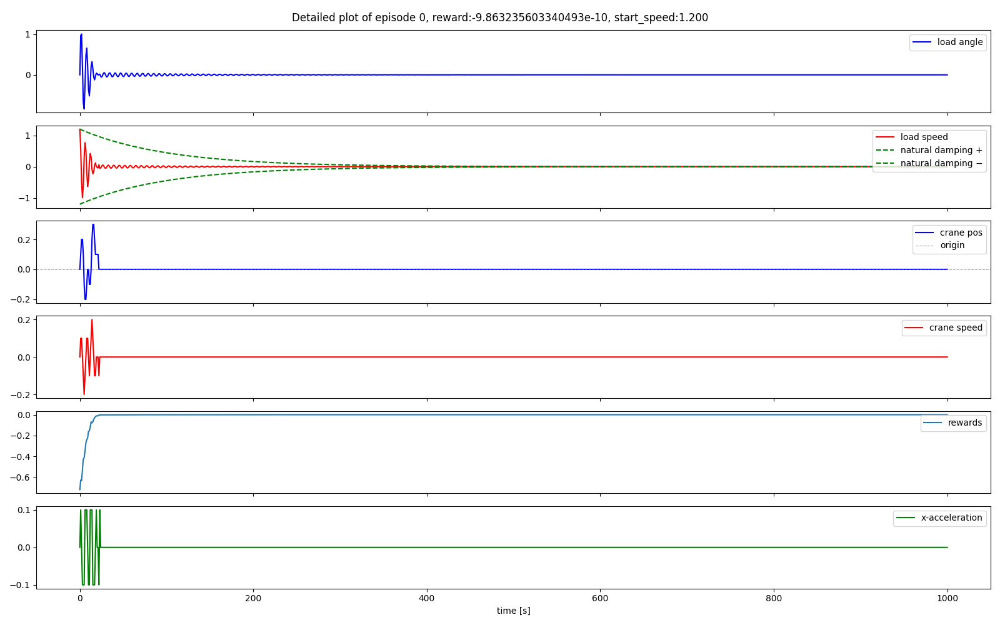
Figure 9. hybrid_cv01_disc_s42, start speed +1.2 m/s.
Settles at step 23, final position machine-epsilon. Three-phase bang-bang:
full brake → coast → done.
B — Continuous, 5.0 m/s — smooth mid-range convergence
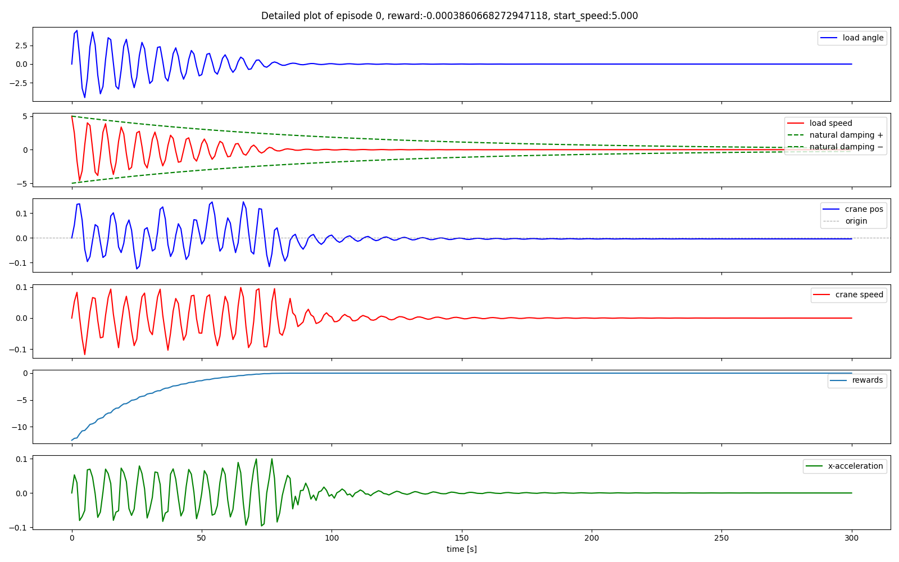
Figure 10. hybrid_cv01_s42 (continuous), start speed +5.0 m/s, 300 steps.
Settles at step 175, final position −0.39 cm. Action (acc panel) is a smoothly decaying
oscillation rather than persistent full-amplitude bang-bang switching.
C — Discrete, 5.0 m/s — bang-bang contrast at same speed
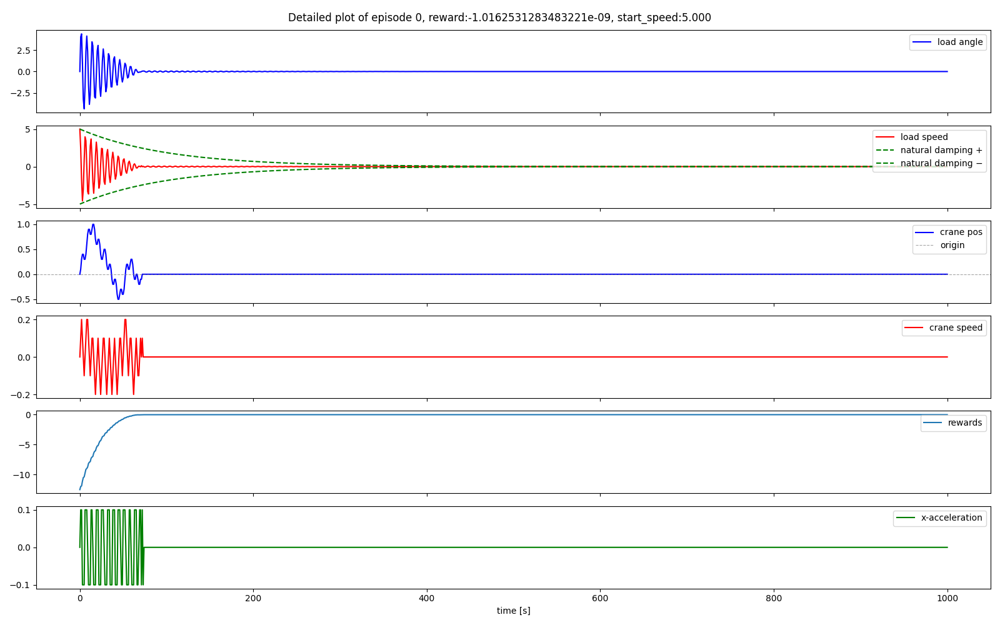
Figure 11. hybrid_cv01_disc_s42, start speed +5.0 m/s.
Settles at step 73 (102 steps earlier than the continuous variant at this speed), final
position machine-epsilon. Action is always ±0.1 or 0 — no intermediate values.
D — Continuous, 9.0 m/s — convergence
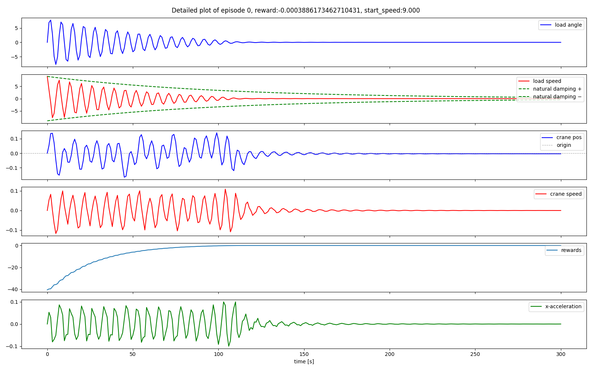
Figure 12. hybrid_cv01_s42 (continuous), start speed +9.0 m/s, 300 steps.
Settles at step 201, final position −0.39 cm. No crash and no non-convergence at this
speed, consistent with the model’s zero-crash record across the full ±10 m/s sweep.
E — Discrete, 9.0 m/s — bang-bang at high speed
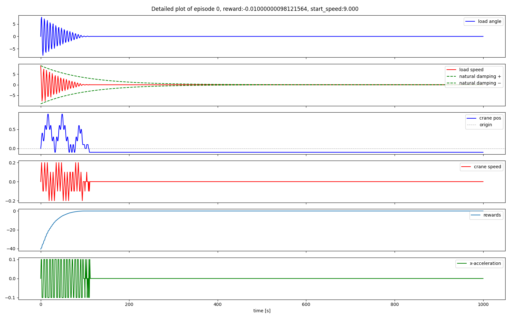
Figure 13. hybrid_cv01_disc_s42, start speed +9.0 m/s.
Settles at step 111 at a −0.10 m offset — one of the ten swept speeds that converge to the
±0.1 m attractor rather than exactly zero (§6.2), shown here for contrast with the
machine-epsilon cases above.
7 Conclusion¶
7.1 Quantitative summary¶
Metric |
s5775 · cont |
s5775 · disc |
s42 · cont |
s42 · disc |
|---|---|---|---|---|
Time to crash-free |
950 k steps |
800 k steps |
700 k steps |
1 050 k steps |
EV at 3 M |
0.986 |
0.971 |
0.987 |
0.928 |
Final position |
0.66 cm |
≈ 0 cm (99/100) |
0.39 cm |
≈ 1.0 cm (90/100 ≈ 0) |
Settle range |
67–246 s |
7–129 s |
95–218 s |
14–126 s |
Sweep crashes (of 100) |
0 |
1 |
0 |
0 |
Non-converging |
0 |
0 |
0 |
0 |
7.2 Training consistency¶
Both seeds eliminate crashes within roughly the first third of training and never return to crashing thereafter. The dense, multi-term reward provides unambiguous per-step feedback on position, velocity, and energy simultaneously, giving the value function a well-constrained learning target. No value-function instability events were observed in either variant, for either seed.
7.3 Seed robustness¶
Continuous-variant final position varies modestly across seeds (0.66 cm for s5775 vs 0.39 cm for s42) with no outlier speeds. The discrete variant is at machine-epsilon precision for 99/100 (s5775) and 90/100 (s42) swept speeds; the misses are one rail-contact transient (s5775, at 8.2 m/s) and a ±0.1 m offset attractor at ten seed-42 speeds. Both are single-run artefacts — one seed, one episode per speed — not systematic: the continuous side is crash-free at every speed for both seeds, the discrete side is crash-free at every speed for seed 42 and at 99/100 for seed 5775, and an earlier unseeded seed-42 discrete run reached \(x = 0\) at every speed. The multi-term reward constrains the value landscape tightly, leaving only these small single-run deviations.
7.4 Effect of discretisation¶
Switching to Discrete(3) (bang-bang actions) improves final position precision for the
large majority of evaluated speeds — final crane position drops from a constant
0.39–0.66 cm (continuous) to machine-epsilon level (1e-14 – 1e-17 m) for 90/100 (seed 42)
and 99/100 (seed 5775) swept speeds. With a continuous action space the agent can settle
at sub-optimal intermediate forces; with Discrete(3) it must commit to a bang-bang
sequence that lands precisely at \(x = 0\), which the dense position-penalty term directly
rewards. The discrete exceptions are a ±0.1 m offset attractor at ten seed-42 speeds and
one rail-contact transient at seed 5775; both are single-run (one seed, one episode per
speed), and an earlier unseeded seed-42 discrete run reached \(x = 0\) at every speed. Mean
discrete |x_pos| is ≈ 0 cm (s5775) and ≈ 1.0 cm (s42), still at or below the continuous
variant’s 0.39–0.66 cm.
Discretisation also settles faster: mean settle step drops from 184.5 → 73.7 s (s5775) and 168.8 → 74.2 s (s42) going from continuous to discrete. Discretisation does not, however, consistently improve the critic’s explained variance in this data — continuous now edges out discrete on EV for both seeds (0.986–0.987 vs 0.928–0.971), the reverse of an earlier training run. Position precision and settle speed are the discretisation benefits that hold robustly; EV is not.
Analysis covers hybrid_cv01 across seeds 5775 and 42, continuous and discrete action spaces.